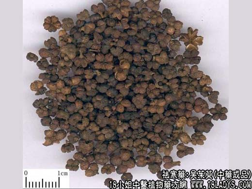
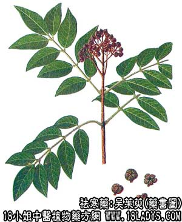

原文连接:https://www.daquan.com/post/2059.html



本品为常用中药。始载《神农本草经》，列为中品。
别名：吴芋。
来源：为芸香科植物灌木或小乔木吴茱萸，及其变种的未成熟干燥果实。
产地：主产贵州省铜仁，镇远，四川省铜梁，彭水，陕西省安康，汉中及广西，云南等省。湖北、浙江亦产。
性状鉴别：本品为蒴果，果实略带五棱，扁球形。直径2～3毫米，也有达5毫米者，表面绿色或黑绿色。顶端五瓣裂（呈五角状），基部有花萼及短小果柄，在扩大镜下观察，果实表面粗糙，皱缩，很不规则，有圆形而稍下凹的油腺。子房五室，每室内含种子1～2枚，淡黄色，富油性。果实质坚脆，具浓烈而特殊的剌鼻香气，味微苦而辛辣。用水浸泡有粘液渗出。
主要成分：含挥发油，主要为吴茱萸内脂、吴茱萸烯等。又含生物硷，主要为吴茱萸硷、吴萸次硷等。
功效与作用：温中散寒、下气止痛。临床观察有健胃、镇痛、止干呕和止嗳酸等功效。实验方面对本品的药理研究还很不充分，初步发现吴茱萸有利尿作用，服后尿量增加30%。吴茱萸汤对大肠杆菌有强力的抑制作用（但煎煮过浓则失效），并对猪蛔虫有显著杀虫效力。又动物实验还发现本品有收缩子宫的作用；吴茱萸汤对麻醉犬有升压作用。
炮制：苦草永制。
性味：辛、苦、大热、有小毒。
归经：入肝、脾、肾经。
功能：疏肝下气，温中散寒，燥湿助阳。
主治：治劂阴头痛，胸腹胀满，呕吐吞酸，阳虚泄泻，吐泻转筋，寒疝脚气，外治口舌生疮。
临床应用：为治疗虚寒胃痛、腹痛、胁痛、疝痛的常用药。
1、用于治疗虚寒胃痛。嗳酸、干呕吐涎、手足冷而苔白脉迟（如慢性胃炎、或溃疡痛），常配干姜祛寒，党参益胃阳，方如吴茱萸汤。如虚寒更甚，干呕不止者，须用吴萸（炮炒）和炮姜等分研末冲服或水煎温服。
2、用于治疗胁痛以及肝胃不和。如偏于热，有右胁疼痛、呕吐吞酸、口苦舌红、脉弦数，甚或食后即痛（以上情况常见于胃及十二指肠溃疡病合并溃疡周围炎、胃炎等），可用吴萸配苦寒药，如川连（即左金丸），再随证加减。
此外，吴萸又常用以配橘核治疝痛，佐补骨脂等治脾肾虚寒所致的“五更泻”，佐四物汤等治虚寒经痛（月经不调，并有小腹冷痛）。又吴茱萸汤配当归、肉桂可治虚寒头痛。外用以吴萸妙盐热敷腹部可治腹部气胀；以吴萸末醋调敷足心治小儿口舌生疮而致的口角流涎，都有一定疗效。
使用注意：本品大热，内火盛者不宜用，孕妇慎用。
用量：3～9g。不宜多用，服用过量会觉喉部干燥难忍。
处方举例：吴茱萸汤（《伤寒论》）：吴萸6g，生姜15g（或干姜6g），党参12g，大枣5枚，水煎服。
注：贵州省铜仁镇远一带产者，过云集散在湖南常德习称吴芋，粒子均匀，很少开裂，色碧绿，气味浓烈，质量最好。四川，陕西产者称川吴芋，粒较吴芋大，色较黑褐，有的顶端开裂，气味稍差。质量稍次。以子粒饮满，香气浓，坚实，匀净，无枝梗杂质者为佳。